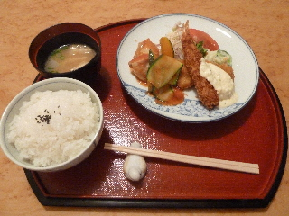

MARUCO
島根県浜田市三隅町三隅1195
22015/06/07
マルコで日替わり定食をいただきました。

写真が上手に撮れてないです。
手前のご飯が大きくて、奥のおかずが小さくなってしまいました。
実際はおかずにボリュームがあります。
今日のメニューはエビフライとバトウのフライと鶏肉のトマトソースでした。
トマトソースやタルタルソースの味が素材感があって美味しかったです。もちろんメインの具も美味しかったです。
島根県浜田市三隅町三隅1195
22015/06/07

写真が上手に撮れてないです。
手前のご飯が大きくて、奥のおかずが小さくなってしまいました。
実際はおかずにボリュームがあります。
今日のメニューはエビフライとバトウのフライと鶏肉のトマトソースでした。
トマトソースやタルタルソースの味が素材感があって美味しかったです。もちろんメインの具も美味しかったです。